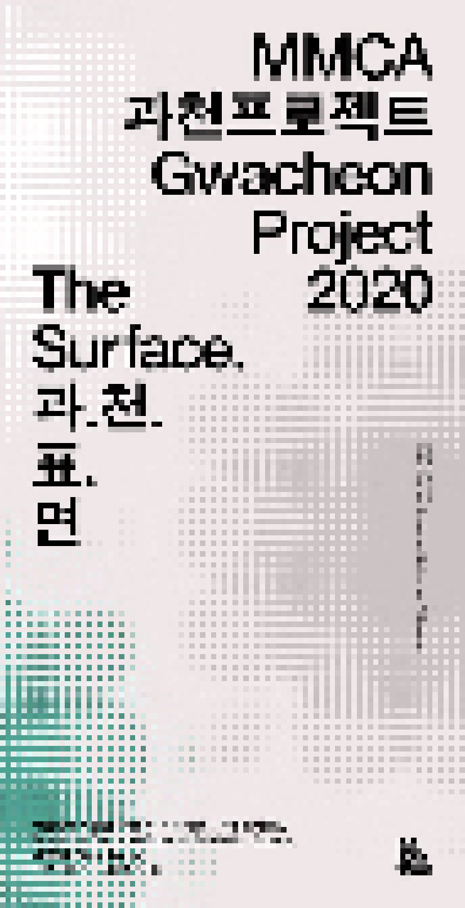

> title
MMCA 과천프로젝트 2020
> content
《MMCA 과천프로젝트 2020》은 2020년 올해를 기점으로 본격화하는 과천관 특화 및 야외 공간 활성화 전략의 일환으로 추진된 국립현대미술관 자체 기획 공모프로그램이다.
《MMCA 과천프로젝트 2020》은 국립현대미술관 과천관의 주요 지향점 중 하나인 가족 중심의 전 세대 공감 미술 공간이라는 맥락에서 야외 공간에 누구나 향유할 수 있는 쉼터와 같은
작품을 선보이고자 하였다. 특히
전 세계적 대유행으로 자리한 코로나19 감염병의 확산 속에서 ‘야외’라는 개방된 공간에 대한 장소적, 조건적 상황을
재해석하고, 이를 통해 미술관을 찾는 관객들에게 ‘숨, 쉼’의 환경을 제공하고자 하였다. 이에
'숨, 쉼, 즐거움'이라는 세 가지 키워드로 과천관 야외조각장 내 잔디밭을 관객을 위한 공간으로 탈바꿈시켰다.
올해 우승 작가는 건축가 에스티피엠제이 stpmj(이승택, 임미정)이다. 추천과 심사 과정을 거쳐 선발된 최종 후보군 4명(팀)에는 최종 당선작가 stpmj(이승택, 임미정)를 포함하여
다이아거날
써츠(Diagonal Thoughts, 강소진, 김사라), 코어건축(유종수, 김빈), 그리고 이용주건축스튜디오(이용주)가 들었다. stpmj의 작품 〈과.천.표.면〉은 현재 야외조각장 내
잔디밭에 대규모 설치물로
실현되어 자리하고 있다. 최종 후보군 4명(팀)이 제안한 아이디어 드로잉, 렌더링 이미지와 영상, 그리고 건축모델 등은 미술관 1층 특별 전시공간에서 확인할 수 있다. 《MMCA 과천프로젝트
2020》은 과천관
야외조각장과 미술관 내 전시공간에서 2020년 10월 8일부터 2021년 5월 30일까지 진행된다.
